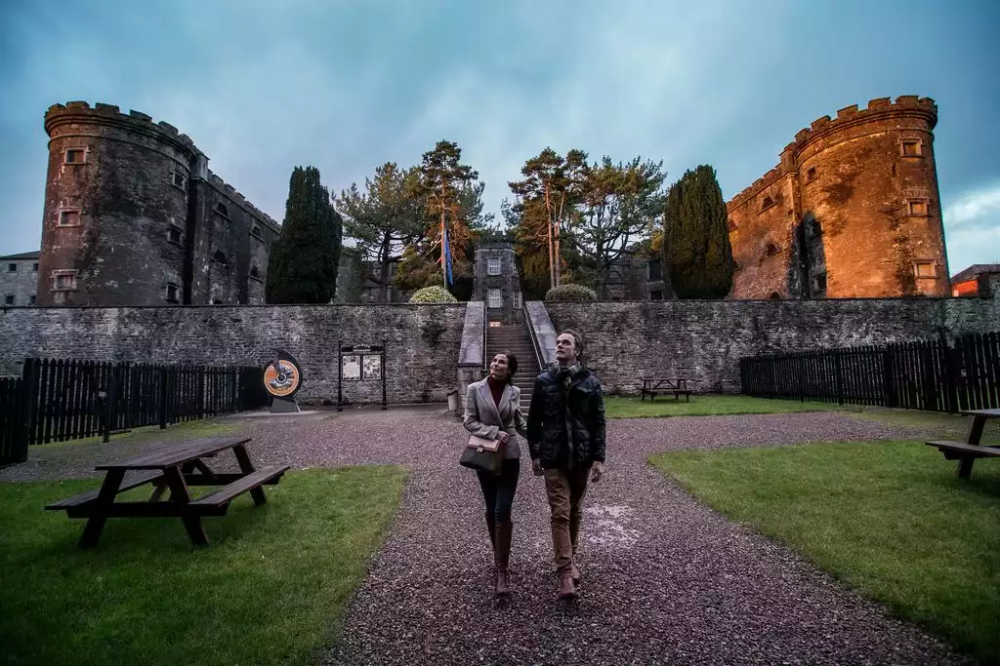
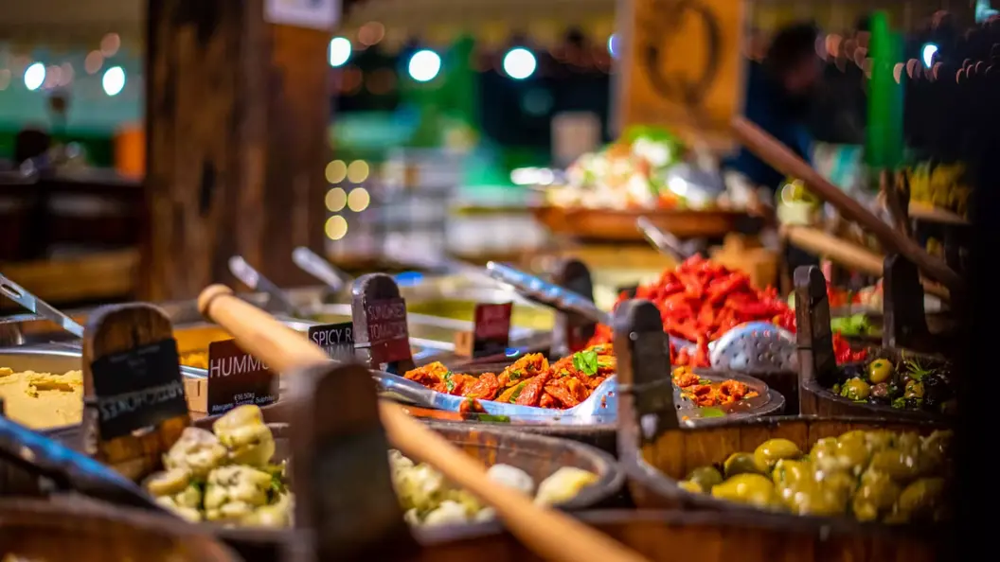
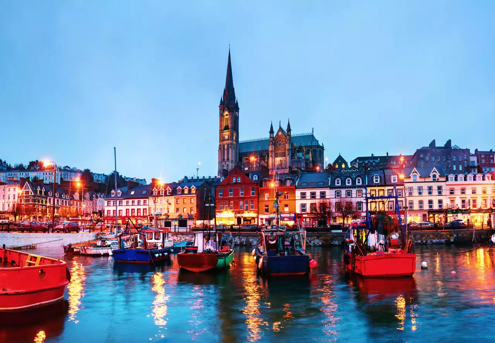
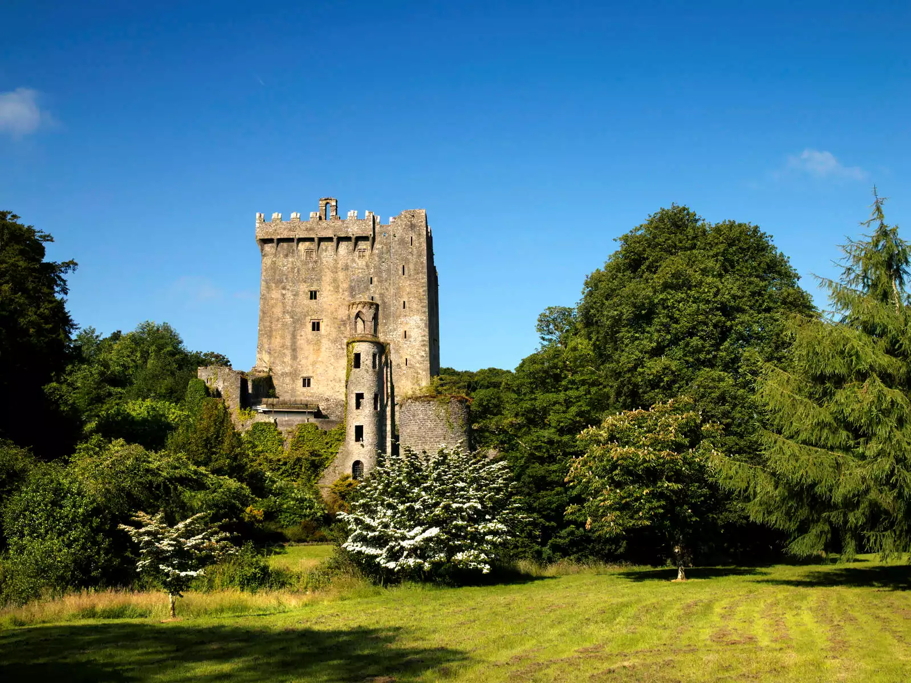

Ciudad de Cork
Paseos junto al río, museos peculiares y un mercado gastronómico del siglo XVIII; lánzate a visitar la ciudad de Cork
Confort sureño
¿Es Cork el mejor lugar del mundo? La gente de Cork tiene claro que sí. Este lugar animado y cosmopolita del suroeste de Irlanda inspira una devoción entre sus habitantes que pocos otros lugares pueden igualar. Es fácil ver por qué. Con una ubicación imponente en una isla en mitad del río Lee, Cork transmite energía positiva gracias a sus cafeterías de moda, animadas galerías de arte, museos poco convencionales y excelentes pubs. Ahora que la ciudad ha entrado en la lista «Lo mejor del mundo 2025» de National Geographic, parece que el secreto ha quedado al descubierto: ¡Cork está realmente DE MODA! Agradablemente compacta, amigable y con un sentido del humor irónico, Cork hace las cosas a su manera, por lo que una escapada a esta ciudad será algo totalmente único. Disfruta de un concierto en una hermosa iglesia reconvertida, explora una espeluznante cárcel del siglo XIX y apúntate a un vertiginoso recorrido repleto de sabores tradicionales en la meca gastronómica del Mercado Inglés. Cork te está esperando...
Los mejores planes para disfrutar en Cork
Descubre por qué Cork es una de las ciudades más fascinantes de la isla de Irlanda.Cork tiene un sabor increíble
Un mercado gastronómico histórico, ricas tradiciones culinarias y chefs con visión de futuro colocan a Cork en la cima de la escena gastronómica.
Historias del Titanic y pueblos tentadores
Si sales de la ciudad, descubrirás fascinantes relatos sobre el Titanic, castillos románticos y bonitas localidades costeras, todo a poca distancia. Un buen lugar para empezar a explorar es el encantador y colorido puerto de Cobh, ubicado en uno de los mejores puertos naturales del mundo. Aquí hizo su última escala el Titanic, un evento que conmemora la Titanic Experience Cobh. Coge el ferry en el puerto de Cork para realizar el breve trayecto que te llevará a la isla Spike, la “Alcatraz de Irlanda”.
El interior del castillo de Blarney, una fortaleza medieval con mazmorras, jardines, cuevas y la famosa Piedra de Blarney, ofrece un aspecto totalmente diferente de la historia de Irlanda. Y si te apetece profundizar más en la famosa cultura gastronómica de Cork, dirígete a la preciosa ciudad de Kinsale o echa un vistazo al muy aclamado mercado agrícola de Midleton (en la ciudad homónima) y almuerza en el célebre Ferrit and Lee.
¿A dónde querés viajar ahora?
Buscá ciudades, consejos o destinos de Irlanda